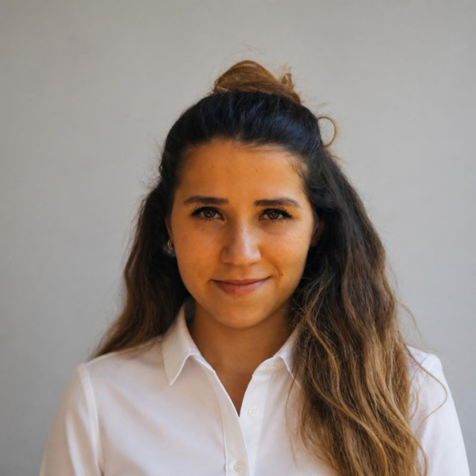

Kaygı ve panik
Yaygın kaygı, panik atak, sağlık kaygısı, sosyal kaygı, belirli korkular (fobiler) ve sürekli bir şey olacakmış gibi hissetmek.
Online terapi
Ergen ve yetişkinlerle görüntülü online terapi. Yol ve trafik derdi olmadan, nerede olursanız olun evinizin rahatlığından.

Hakkımda
Ben Uzman Klinik Psikolog Sibel Tanrıverdi. Lisans eğitimimi Beykent Üniversitesi Psikoloji bölümünde, yüksek lisansımı İstinye Üniversitesi Klinik Psikoloji programında tamamladım.
Tüm seanslarımı online yapıyorum. Böylece nerede yaşarsanız yaşayın, size uygun bir saatte, kendi evinizin güvenli alanından destek alabiliyorsunuz.
Seanslarda yargılanmadan konuşabileceğiniz, yaşadıklarınızı birlikte anlamlandırdığımız ve size iyi gelecek değişiklikleri adım adım planladığımız bir alan sunmayı amaçlıyorum. Kaygı ve depresyondan ilişki sorunlarına, travmadan yasa kadar geniş bir yelpazede çalışıyorum.
İlk görüşmelerimizde sizi, hayatınızı ve sizi terapiye getiren konuyu tanımaya zaman ayırıyorum. Neyin değişmesini istediğinizi birlikte netleştiriyor, hedeflerimizi ortak belirliyoruz. Süreç boyunca nasıl gittiğimizi düzenli olarak birlikte değerlendiriyoruz; terapinin hızını ve yönünü siz de belirliyorsunuz.
Tek bir yönteme bağlı kalmıyorum; her kişinin ihtiyacına göre farklı yaklaşımları bir araya getiriyorum. Bilişsel Davranışçı Terapi ile zorlayan düşünce ve davranış kalıplarını fark edip değiştirmeye, EMDR ile travmatik ve zorlayıcı anıların bugünkü yükünü hafifletmeye, Kabul ve Kararlılık Terapisi ile zor duygularla mücadele etmek yerine onlara yer açıp değerlerinize uygun yaşamaya, Duygu Odaklı Terapi ile duygularınızı ve ilişkilerinizdeki bağı anlamaya odaklanıyoruz. Uygun durumlarda hipnoterapiden de yararlanıyorum.
Ergenlerle çalışırken gencin kendini güvende ve anlaşılmış hissetmesine özen gösteriyor, aileyi de sürece uygun ölçüde dahil ediyorum. Yetişkinlerle ise bireysel terapinin yanı sıra çift terapisi de yapıyorum.
Terapiye başlamak için her şeyin çok kötü olması gerekmiyor. Kendinizi daha iyi anlamak, tekrar eden bir döngüden çıkmak ya da zor bir dönemde yalnız olmamak için de başvurabilirsiniz. Ücretsiz ön görüşmede birbirimizi tanır, birlikte çalışmanın size iyi gelip gelmeyeceğine beraber karar veririz.
Hizmetler
Yaygın kaygı, panik atak, sağlık kaygısı, sosyal kaygı, belirli korkular (fobiler) ve sürekli bir şey olacakmış gibi hissetmek.
İsteksizlik, umutsuzluk, enerji ve keyif kaybı, değersizlik duygusu, duygu dalgalanmaları.
Kaza, kayıp, şiddet ya da çocukluktan gelen zor deneyimlerin bugüne etkisi, travma sonrası stres.
Akıldan çıkmayan düşünceler, kontrol etme, temizlik ya da tekrar etme ihtiyacı.
Ergen ve yetişkinlerde odaklanma güçlüğü, erteleme, dağınıklık ve dürtüsellikle baş etme; günlük hayatı düzenleme becerileri. Gerektiğinde psikiyatri ile iş birliği.
Partner ilişkileri, uzak mesafe ilişkileri, ayrılık ve boşanma süreci, bağlanma ve güven sorunları.
Çiftlerle birlikte yapılan görüşmelerde iletişim sorunları, tekrar eden çatışmalar, güven kırılmaları ve ilişkiyi yeniden yapılandırma.
Cinsel isteksizlik, performans kaygısı, vajinismus, cinsellikle ilgili utanç ve kaygılar.
Aileyle sınır koyma, uzaktaki aileye karşı suçluluk, ebeveynlik zorlukları, kuşaklar arası çatışmalar.
Bir yakını kaybetmek, uzaktayken vedalaşamamak, yasın tek başına taşınması, ilişki ya da iş kayıpları.
İş ve okul baskısı, kariyer değişiklikleri, mükemmeliyetçilik, iş ile özel hayat arasındaki dengenin kaybolması.
Kendine yönelik eleştirel ses, karar verememe, tekrar eden örüntüleri fark etme, sınır koyamama.
Okul ve sınav stresi, arkadaş ilişkileri, kimlik arayışı, aileyle iletişim ve gelecek kaygısı.
Uzun süren ağrılar, migren ve gerilim tipi baş ağrılarıyla yaşamayı kolaylaştırmak, ağrının duygu durumu ve günlük hayat üzerindeki etkisini azaltmak. Tıbbi tedavinin yerine değil, yanında.
Kanser, otoimmün hastalıklar ya da diyabet gibi tanılarla gelen kaygı, yas ve uyum süreci; tedavi döneminde duygusal destek.
Alkol ve madde kullanımı, sigara, kumar, internet ve ekran bağımlılığı; bırakma sürecinde ve nüksleri önlemede destek.
Evlilik, ebeveyn olmak, doğum sonrası dönem, iş değişikliği, taşınma ya da emeklilik gibi hayatın yeniden düzenlendiği dönemler.
Tedavi sürecindeki umut ve hayal kırıklığı döngüsü, gebelik kaybının yası ve bu sürecin çift ilişkisine etkileri.
Cinsel yönelim ve kimlik sorularında, açılma sürecinde ve ayrımcılığın etkileriyle baş etmede olumlayıcı, yargısız destek.
Yeni bir şehre ya da ülkeye taşınmanın getirdiği yalnızlık, uyum güçlüğü, aidiyet ve kimlik soruları, geride bırakılanlara duyulan özlem.
Öfke patlamaları, duyguları tanıyamama ya da bastırma, yoğun duygularla baş etme.
Uyku sorunları, stresin bedende yarattığı belirtiler ve psikosomatik şikayetler.
Duygusal yeme, tıkınırcasına yeme, bitmeyen diyet döngüsü, beden algısı ve yemekle ilişkiyi yeniden kurma.
Burada adı geçmeyen bir konu için de yazabilirsiniz. Ön görüşmede birlikte çalışmanın size uygun olup olmadığını konuşuruz.
Hipnoterapi
Hipnoz, dikkatin içe yöneldiği, bedenin gevşediği ve zihnin önerilere daha açık hâle geldiği doğal bir odaklanma hâlidir. Bir kitaba dalıp etrafı duymamak ya da uzun bir yolda dalıp gitmek, günlük hayatta yaşadığımız hipnoza yakın deneyimlerdir.
Hipnoterapi, bu hâlin terapötik amaçla, bir terapi planının parçası olarak kullanılmasıdır. Tek başına bir sihirli çözüm değil; diğer terapi yöntemleriyle birlikte, uygun görülen durumlarda kullandığım bir araçtır. Sağlık Bakanlığı onaylı hipnoz uygulama sertifikasına sahibim.
Önce konuşarak ihtiyacınızı ve hedefinizi belirliyoruz; hipnozun sizin için uygun olup olmadığına birlikte karar veriyoruz. Uygun görülürse seansın bir bölümünde sizi rahatlatıcı bir çalışmayla hipnoz hâline yönlendiriyor, hedefinize yönelik çalışıyor ve ardından yaşadıklarınızı birlikte konuşuyoruz. Bazı psikiyatrik durumlarda hipnoz önerilmez; bu değerlendirme ön görüşmede yapılır.
Online seans
Formu doldurun ya da e-posta gönderin. Kısa bir mesaj yeterli.
10 dakikalık ücretsiz bir görüşmede ihtiyacınızı konuşur, birlikte çalışmaya uygun olup olmadığımızı görürüz.
Seans saatini sizin bulunduğunuz şehrin saatine göre ayarlarız.
Size gönderilen Google Meet bağlantısıyla, sessiz ve rahat bir odadan görüntülü olarak katılırsınız.
Seanslar Türkiye saatine göre planlanır. Farklı bir saat dilimindeyseniz şehrinizi seçerek karşılığını görebilirsiniz.
Avrupa ve Amerika yaz/kış saati uygular, Türkiye uygulamaz. Bu yüzden aradaki fark yılda iki kez değişir; tablo bunu bugünün tarihine göre hesaplar.
| Türkiye | Sizin saatiniz |
|---|
Seanslar hafta içi 09:00 ile 19:00 arasında, salı ve perşembe akşamları ise 22:00'ye kadar (Türkiye saati) yapılır. Tabloda seansın başlayabileceği saatlerden örnekler var.
Sık sorulanlar
Araştırmalar, kaygı ve depresyon gibi pek çok konuda görüntülü terapinin yüz yüze terapiyle benzer sonuçlar verdiğini gösteriyor. En önemli etken, kendinizi güvende hissettiğiniz bir terapötik ilişkidir.
Psikiyatrist tıp doktorudur; tanı koyar ve ilaç tedavisi düzenler. Klinik psikolog ise psikoterapi yapar; düşünce, duygu ve davranış örüntüleriniz üzerinde sizinle birlikte çalışır ve ilaç yazmaz. Kaygı, depresyon, yas ya da travma gibi pek çok durumda ikisi birlikte en iyi sonucu verir. Gerektiğinde sizi bir psikiyatriste yönlendirir ve onunla iş birliği içinde çalışırım.
Evet. Görüşmeler meslek etiği kuralları çerçevesinde gizli tutulur ve kayıt alınmaz. Seanslar Google Meet üzerinden yapılır ve görüşme bağlantısı yalnızca size gönderilir.
Türkiye'den katılanlar için seans ücreti 2.000 TL'dir. Yurt dışından katılanlar için seans ücreti Avrupa'da 75 €, ABD ve diğer ülkelerde 80 $'dır. Ödeme banka havalesi ya da Wise ile yapılır; ödeme bilgileri randevu sırasında size iletilir.
Seansınızı en geç 24 saat öncesinden haber vererek ücretsiz iptal edebilir ya da başka bir saate alabilirsiniz. 24 saatten az kala yapılan iptallerde ve katılınmayan seanslarda seans ücreti alınır.
Ergenlerle çalışmaya başlamadan önce ebeveyn ya da yasal vasinin onayı alınır. Ön görüşme ebeveynle yapılır; seanslar ise gencin kendini rahat ifade edebilmesi için onunla birebir yürütülür. Gizlilik sınırları en başta hem gence hem aileye açıkça anlatılır.
İnternet bağlantısı, kameralı bir bilgisayar ya da telefon ve konuşurken kimsenin duymayacağı bir oda. Kulaklık önerilir.
Online terapi acil durumlar için uygun değildir. Kendinize ya da başkasına zarar verme düşünceniz varsa bulunduğunuz ülkenin acil numarasını arayın: Türkiye ve Avrupa'da 112, ABD'de 911 ya da 988.
İletişim
Mesajlarınıza genellikle bir iş günü içinde dönüş yapılır.
Bu metin, 6698 sayılı Kişisel Verilerin Korunması Kanunu (KVKK) kapsamında, veri sorumlusu sıfatıyla Uzman Klinik Psikolog Sibel Tanrıverdi tarafından hazırlanmıştır.
İşlenen veriler. İletişim formu ya da e-posta yoluyla paylaştığınız ad, e-posta adresi, yaşadığınız ülke/şehir ve mesajınızın içeriği. Mesajınızda paylaşmayı seçtiğiniz sağlık bilgileri KVKK'da özel nitelikli kişisel veri sayılır.
Amaç. Randevu ve ön görüşme talebinize dönüş yapmak, seans planlamak ve sizinle iletişim kurmak.
Hukuki sebep. Bir sözleşmenin kurulmasıyla doğrudan ilgili olması (KVKK m. 5/2-c) ve özel nitelikli veriler ile yurt dışına aktarım için açık rızanız (KVKK m. 6 ve m. 9).
Aktarım. Verileriniz üçüncü kişilerle paylaşılmaz. Form ve e-posta hizmetleri (Google ve FormSubmit) sunucuları yurt dışında bulunduğundan veriler bu hizmetler aracılığıyla yurt dışına aktarılır. Seans içerikleri kaydedilmez.
Saklama süresi. Terapi sürecine başlanmazsa iletişim kayıtları en geç 1 yıl içinde silinir. Başlanması halinde kayıtlar yasal saklama süreleri boyunca güvenli şekilde tutulur.
Haklarınız. KVKK m. 11 uyarınca verilerinizin işlenip işlenmediğini öğrenme, düzeltilmesini ya da silinmesini isteme ve açık rızanızı geri alma haklarına sahipsiniz. Başvurularınızı sibeltanriverdi91@gmail.com adresine iletebilirsiniz.